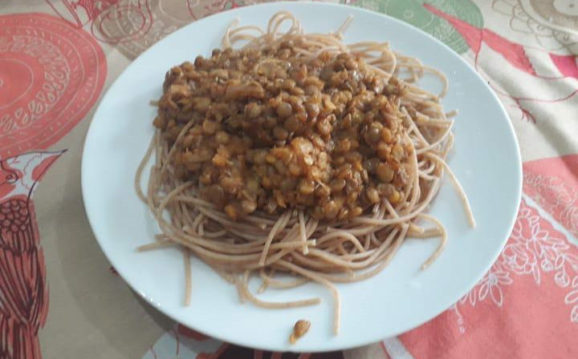

Macarrão com Molho de Lentilha
Boa noite galerinha!!! No feriadão de carnaval, eu fiz um macarrão com molho de lentilha fenomenal!!!
A receita foi tirada do canal de youtube Brunna Schnorr. O link do vídeo é:
Link

Ingredientes
- 500g de lentilha
- 1 colher de sopa de azeite de oliva
- ½ xícara de cebola picadinha
- 2 dentes de alho picadinho
- ½ xícara de cebola picadinha
- 1 ½ xícara de molho de tomate
Temperos
- 1 colher de sopa de orégano
- 1 colher de chá de sal
- Pimenta do reino a gosto
- 500g macarrão integral parafuso
Preparo
- Coloque os 500g de lentilha de molho de um dia para outro
- Escorra a lentilha e lave-a
- Numa panela, coloque o azeite, a cebola, o alho e a cebola. Dê uma refogadinha
- Adicione 2 ½ xícaras de lentilha. Mexa a mistura
- Adicione o molho de tomate. Mexa a mistura
- Adicione 1 xícara de água. Mexa a mistura
- Adicione os temperos. Mexa a mistura
- Deixe a mistura em fogo médio e a tampa da panela meio aberta por 20 min
- Faça o macarrão integral
- Coloque a mistura em cima do macarrão, tipo um molho para o macarrão